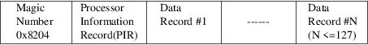
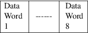
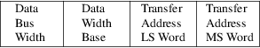
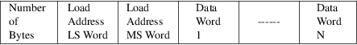

srec_hp64k - HP64000 Absolute Data Format
This format is the output of the HP 64000 Development System Linker and associated tools. All fields are 16-bit words. This is a binary (non-text) file format.
File
Format
Files in this format start with a header record.
Then comes the Processor Information Record.
Then comes the data itself, organized into records.
Overall Structure

Header
The header consists of 8 words which are interpreted as a
null terminated string:

Processor Information Record
(PIR)
The PIR does not have a checksum; it is therefore possible
that a corrupt file header will go undetected.

Data Record
Each data record consists of a byte count followed by the
comensurate number of words. The data part of each record is
raw byte values, no encoding.

The checksum is calculated by a simple sum of unsigned bytes into a 32-bit accumulator.
Commentary
The implementation is based on two documents:
|
* |
HP 64000 Logic Development System - File Format Reference Manual , #64980-90933, 1985 | ||
|
* |
HP 64700 Operating Environment - Absolute File Translator. HP Part No. B1471-97008, 1992 |
These documents disagree on some points, and also do not quite match actual examples (firmware update files from early 90’s equipment; probably generated from an unknown MC68k toolchain).
The main points of disagreement are:
|
* |
Two first bytes of the file, before any header or the "Processor Information Record", are not officially documented anywhere yet found. (68k linker docs may be worth investigating if they can be found). In this implementation they are set to "82 04", where 04 matches HP doc’s "type" value of 4 for Absolute files. | ||
|
* |
Header: Only mentioned in B1471. 16 bytes of user data? Present in this implementation. | ||
|
* |
"recsize" (author’s terminology) : redundant field, before every record, giving length of its record minus 1, i.e. recsize == (DataRecord.numbytes + 6) - 1 |
HP 64000 Logic Development System - File Format Reference Manual, #64980-90933, 1985 https://archive.org/details/bitsavers_hp64000sof986_8480556
HP 64700 Operating Environment - Absolute File Translator. HP Part No. B1471-97008, 1992 https://archive.org/details/bitsavers_hp64700sof008AbsoluteFileTranslatorMar92_143924
srec_cat
version 1.65
Copyright (C) 1998, 1999, 2000, 2001, 2002, 2003, 2004,
2005, 2006, 2007, 2008, 2009, 2010, 2011, 2012, 2013, 2014,
2018, 2019, 2022 Peter Miller
The srec_cat program comes with ABSOLUTELY NO WARRANTY; for details use the ’srec_cat -VERSion License’ command. This is free software and you are welcome to redistribute it under certain conditions; for details use the ’srec_cat -VERSion License’ command.